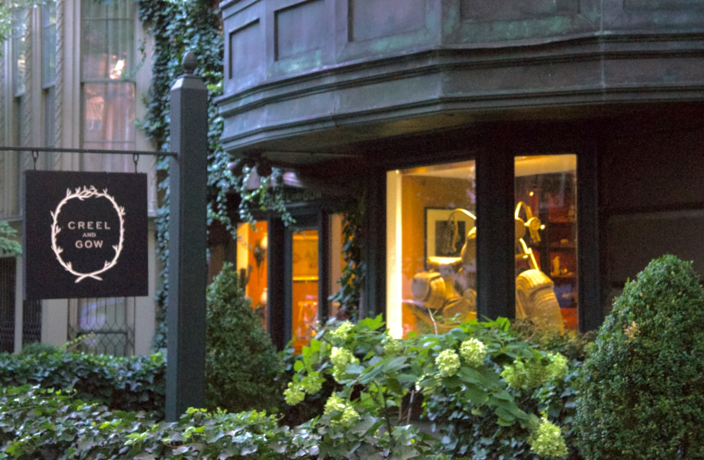
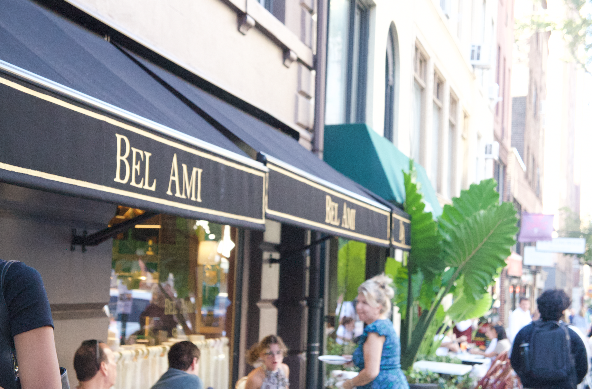

This is my image before using Camera Filter!

This is my image after using Camera Filter! It was hard to brighten the inside of the shop while darkening the already dark areas, but I believe I got it!

This is my image before using Camera Filter on Adobe Photoshop!
This is my image after using Camera Filter! This image was a bit difficult to straighten but I tried my best!